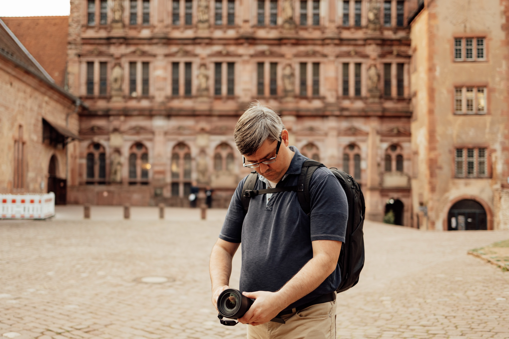
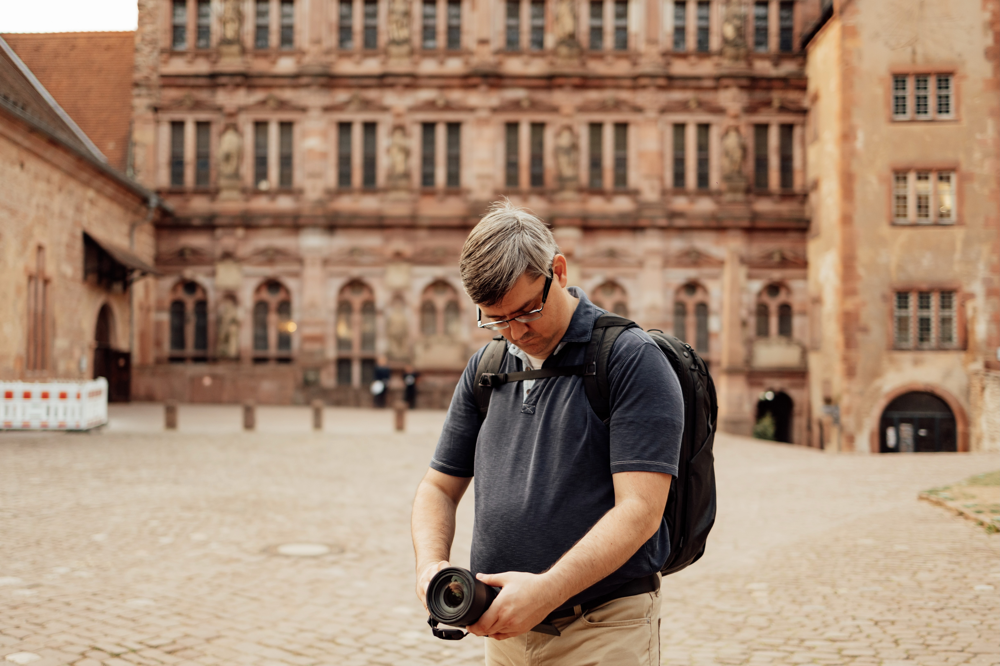

The Story Behind the Lens
Capturing authentic moments and creating timeless memories in Frankfurt and beyond.
 

Hello, I'm Jason
As an English-speaking photographer based in Frankfurt am Main, I bring a unique perspective to every shoot. My journey in photography began with a passion for capturing genuine moments and has evolved into a professional career focused on creating authentic, emotional images.
With years of experience in portrait, wedding, and event photography, I understand that every moment is unique and deserves to be captured with creativity and care. My approach combines technical expertise with an artistic eye, ensuring that each photo tells its own story.
Based in Frankfurt, I serve clients throughout Hessen and beyond, bringing a professional yet personal touch to every photography session. Whether it's a wedding, portrait session, or special event, my goal is to create images that you'll treasure for years to come.
My Approach
The principles that guide my photography
Authenticity
Capturing genuine moments and real emotions in every frame.
Creativity
Bringing an artistic perspective to tell your unique story.
Excellence
Delivering professional quality and attention to detail.